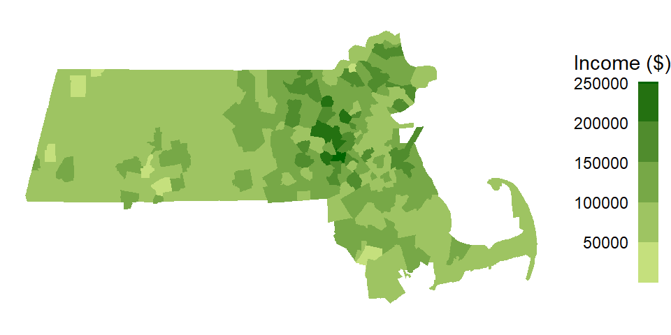

Chapter 13 Spatial Autocorrelation
“The first law of geography: Everything is related to everything else, but near things are more related than distant things.” Waldo R. Tobler (Tobler 1970)
Mapped events or entities can have non-spatial information attached to them (some GIS software call these attributes). When mapped, these values often exhibit some degree of spatial relatedness at some scale. This is what Tobler was getting at: The idea that values close to one another tend to be similar. In fact, you will be hard-pressed to find mapped features that do not exhibit some kind of non-random pattern.

So how do we model spatial patterns? The approach taken will depend on how one chooses to characterize the underlying process–this can be either a spatial trend model or a spatial clustering/dispersion model. This chapter focuses on the latter.
13.1 Global Moran’s I
Though our visual senses can, in some cases, discern clustered regions from non-clustered regions, the distinction may not always be so obvious. We must therefore come up with a quantitative and objective approach to quantifying the degree to which similar features cluster or disperse and where such clustering occurs. One popular measure of spatial autocorrelation is the Moran’s I coefficient.
13.1.1 Computing the Moran’s I
Let’s start with a working example: 2020 median per capita income for the state of Maine.

Figure 13.1: Map of 2020 median per capita income for Maine counties (USA).
It may seem apparent that, when aggregated at the county level, the income distribution appears clustered with high counties surrounded by high counties and low counties surrounded by low counties. But a qualitative description may not be sufficient; we might want to quantify the degree to which similar (or dissimilar) counties are clustered. One measure of this type or relationship is the Moran’s I statistic.
The Moran’s I statistic is the correlation coefficient for the relationship between a variable (like income) and its neighboring values. But before we go about computing this correlation, we need to come up with a way to define a neighbor. One approach is to define a neighbor as being any contiguous polygon. For example, the northern most county (Aroostook), has four contiguous neighbors while the southern most county (York) has just two contiguous counties. Other neighborhood definitions can include distance bands (e.g. counties within 100 km) and k nearest neighbors (e.g. the 2 closest neighbors). Note that distance bands and k nearest neighbors are usually measured using the polygon’s centroids and not their boundaries.

Figure 13.2: Maps show the links between each polygon and their respective neighbor(s) based on the neighborhood definition. A contiguous neighbor is defined as one that shares a boundary or a vertex with the polygon of interest. Orange numbers indicate the number of neighbors for each polygon. Note that the top most county has no neighbors when a neighborhood definition of a 100 km distance band is used (i.e. no centroids are within a 100 km search radius)
Once we’ve defined a neighborhood for our analysis, we identify the neighbors for each polygon in our dataset then summaries the values for each neighborhood cluster (by computing their mean values, for example). This summarized neighborhood value is sometimes referred to as a spatially lagged value (Xlag). In our working example, we adopt a contiguity neighborhood and compute the average neighboring income value (Incomelag) for each county in our dataset. We then plot Incomelag vs. Income for each county. The Moran’s I coefficient between Incomelag and Income is nothing more than the slope of the least squares regression line that best fits the points after having equalized the spread between both sets of data.
Figure 13.3: Scatter plot of spatially lagged income (neighboring income) vs. each countie’s income. If we equalize the spread between both axes (i.e. convert to a z-value) the slope of the regression line represents the Moran’s I statistic.
If there is no degree of association between Income and Incomelag, the slope will be close to flat (resulting in a Moran’s I value near 0). In our working example, the slope is far from flat with a Moran’s I value is 0.28. So this begs the question, how significant is this Moran’s I value (i.e. is the computed slope significantly different from 0)? There are two approaches to estimating the significance: an analytical solution and a Monte Carlo solution. The analytical solution makes some restrictive assumptions about the data and thus cannot always be reliable. Another approach (and the one favored here) is a Monte Carlo test which makes no assumptions about the dataset including the shape and layout of each polygon.
13.1.2 Monte Carlo approach to estimating significance
In a Monte Carlo test (a permutation bootstrap test, to be exact), the attribute values are randomly assigned to polygons in the data set and, for each permutation of the attribute values, a Moran’s I value is computed.
Figure 13.4: Results from 199 permutations. Plot shows Moran’s I slopes (in gray) computed from each random permutation of income values. The observed Moran’s I slope for the original dataset is shown in red.
The output is a sampling distribution of Moran’s I values under the (null) hypothesis that attribute values are randomly distributed across the study area. We then compare our observed Moran’s I value to this sampling distribution.

Figure 13.5: Histogram shows the distribution of Moran’s I values for all 199 permutations; red vertical line shows our observed Moran’s I value of 0.28.
In our working example, 199 simulations indicate that our observed Moran’s I value of 0.28 is not a value we would expect to compute if the income values were randomly distributed across each county. A pseudo p-value can easily be computed from the simulation results:
\[ \dfrac{N_{extreme}+1}{N+1} \]
where \(N_{extreme}\) is the number of simulated Moran’s I values more extreme than our observed statistic and \(N\) is the total number of simulations. Here, out of 199 simulations, just three simulated I values were more extreme than our observed statistic, \(N_{extreme}\) = 3, so \(p\) is equal to (3 + 1) / (199 + 1) = 0.02. This is interpreted as “there is a 2% probability that we would be wrong in rejecting the null hypothesis Ho.”
Note that in this permutation example, we shuffled around the observed income values such that all values were present in each permutation outcome–this is sometimes referred to as a randomization option in a few software implementations of the Moran’s I hypothesis test. Note that here, randomization is not to be confused with the way the permutation technique “randomly” assigns values to features in the data layer.
Alternatively, one can choose to randomly assign a set of values to each feature in a data layer from a theorized distribution (for example, a Normal distribution). This may result in a completely different set of values for each permutation outcome. Note that you would only adopt this approach if the theorized distribution underpinning the value of interest is known a priori.
Another important consideration when computing a pseudo p-value from a permutation test is the number of simulations to perform. In the above example we ran 199 permutations, thus, the smallest p-value we could possibly come up with is 1 / (199 + 1) or a p-value of 0.005. You should therefore chose a number of permutations, \(N\), large enough to ensure a reliable level of significance.
13.2 Moran’s I at different lags
So far we have looked at spatial autocorrelation where we define neighbors as all polygons sharing a boundary with the polygon of interest. We may also be interested in studying the ranges of autocorrelation values as a function of distance. The steps for this type of analysis are straightforward:
Compute lag values for a defined set of neighbors.
Calculate the Moran’s I value for this set of neighbors.
Repeat steps 1 and 2 for a different set of neighbors (at a greater distance for example) .
For example, the Moran’s I values for income distribution in the state of Maine at distances of 75, 125, up to 325 km are presented in the following plot:

Figure 13.6: Moran’s I at different spatial lags defined by a 50 km width annulus at 50 km distance increments. Red dots indicate Moran I values for which a P-value was 0.05 or less.
The plot suggests that there is significant spatial autocorrelation between counties within 25 km of one another, but as the distances between counties increases, autocorrelation shifts from being positive to being negative meaning that at greater distances, counties tend to be more dissimilar.
13.3 Local Moran’s I
We can decompose the global Moran’s I into a localized measure of autocorrelation–i.e. a map of “hot spots” and “cold spots”.
A local Moran’s I analysis is best suited for relatively large datasets, especially if a hypothesis test is to be implemented. We’ll therefor switch to another dataset: Massachusetts household income data.

Applying a contiguity based definition of a neighbor, we get the following scatter plot of spatially lagged income vs. income.
Figure 13.7: Grey vertical and horizontal lines define the mean values for both axes values. Red points highlight counties with relatively high income values (i.e. greater than the mean) surrounded by counties whose average income value is relatively high. Likewise, dark blue points highlight counties with relatively low income values surrounded by counties whose average income value is relatively low.
You’ll note that the mean value for Income, highlighted as light grey vertical and horizontal lines in the above plot, carve up the four quadrant defining the low-low, high-low, high-high and low-high quadrants when starting from the bottom-left quadrant and working counterclockwise. Note that other measures of centrality, such as the median, could be used to delineate these quadrants.
The values in the above scatter plot can be mapped to each polygon in the dataset as shown in the following figure.
Figure 13.8: A map view of the low-low (blue), high-low (light-blue), high-high (red) and low-high (orange) counties.
Each observation that contributes to the global Moran’s I can be assigned a localized version of that statistic, \(I_i\) where the subscript \(i\) references the individual geometric unit. The calculation of \(I_i\) is shown later in the chapter.
At this point, we have identified the counties that are surrounded by similar values. However, we have yet to assess which polygons are “significantly” similar or dissimilar to their neighbors.
As with the global Moran’s I, there is both an analytical and Monte Carlo approach to computing significance of \(I_i\). In the case of a Monte Carlo approach, one shuffles all values in the dataset except for the value, \(y_i\), of the geometric unit \(i\) whose \(I_i\) we are assessing for significance. For each permutation, we compare the value at \(y_i\) to the average value of its neighboring values. From the permutations, we generate a distribution of \(I_i\) values (for each \(y_i\) feature) we would expect to get if the values were randomly distributed across all features.
We can use the following polygon in eastern Massachusetts as example.

Figure 13.9: Polygon whose signifcance value we are asessing in this example.
Its local Moran’s I statistic is 0.85. A permutation test shuffles the income values around it all the while keeping its value constant. An example of an outcome of a few permutations follows:

Figure 13.10: Local Moran’s I outcomes of a few permutations of income values.
You’ll note that even though the income value remains the same in the polygon of interest, its local Moran’s I statistic will change because of the changing income values in its surrounding polygons.
If we perform many more permutations, we come up with a distribution of \(I_i\) values under the null that the income values are randomly distributed across the state of Massachusetts. The distribution of \(I_i\) for the above example is plotted using a histogram.

Figure 13.11: Distribution of \(I_i\) values under the null hypothesis that income values are randomly distributed across the study extent. The red vertical line shows the observed \(I_i\) for comparison.
About 9.3% of the simulated values are more extreme than our observed \(I_i\) giving us a pseudo p-value of 0.09.
If we perform this permutation for all polygons in our dataset, we can map the pseudo p-values for each polygon. Note that here, we are mapping the probability that the observed \(I_i\) value is more extreme than expected (equivalent to a one-tail test).

Figure 13.12: Map of the pseudo p-values for each polygons’ \(I_i\) statistic.
One can use the computed pseudo p-values to filter the \(I_i\) values based on a desired level of significance. For example, the following scatter plot and map shows the high/low “hotspots” for which a pseudo p-value of 0.05 or less was computed from the above simulation.
Figure 13.13: Local Moran’s I values having a signifcance level of 0.05 or less.
You’ll note that the levels of significance do not apply to just the high-high and low-low regions, they can apply to all combinations of highs and lows.
Here’s another example where the \(I_i\) values are filtered based on a more stringent significance level of 0.01.
Figure 13.14: Local Moran’s I values having a signifcance level of 0.01 or less.
13.3.1 A note about interpreting the pseudo p-value
While the permutation technique highlighted in the previous section used in assessing the significance of localized spatial autocorrelation does a good job in circumventing limitations found in a parametric approach to inference (e.g. skewness in the data, irregular grids, etc…), it still has some limitations when one interprets this level of significance across all features. For example, if the underlying process that generated the distribution of income values was truly random, the outcome of such a realization could look like this:

Figure 13.15: Realization of a random process. Left map is the distribution of income values under a random process. Right map is the outcome of a permutation test showing the computed pseudo p-values. Each permutation test runs 9999 permutations.
Note how some \(I_i\) values are associated with low pseudo p-value. In fact, one polygon’s \(I_i\) value is associated with pseudo p-value of 0.001 or less! This is to be expected since the likelihood of finding a significant \(I_i\) increases the more permutation tests are performed. Here we have 343 polygons, thus we ran 343 tests. This is analogous to having multiple opportunities to picking an ace of spades from a deck of cards–the more opportunities you have, the greater the chance of grabbing an ace of spades.
Here’s another example of a local Moran’s I test on a realization of a randomly reshuffled set of income values.

Figure 13.16: Another realization of a random process. Left map is the distribution of income values under a random process. Right map is the outcome of a permutation test showing computed pseudo p-values.
We still have quite a few \(I_i\) values associated with a very low pseudo p-value (The smallest p-value in this example is 0.0006), This would lead one to assume that several polygons exhibit significant levels of spatial autocorrelation with their neighbors when in fact this is due to chance since we did not explicitly generate localized positive or negative spatial autocorrelation.
Instead of generating two realizations of a random process, what if we generated 200 realizations of a random process? This would generate 200 x 323 pseudo p-values. With this working example, about 10% of the outcomes result in a pseudo p-value of 0.05 or less.
Figure 13.17: Distribution of pseudo p-values following 200 realizations of a random process. Blue numbers are the p-value bins, red numbers under each bins are calculated percentages.
This problem is known in the field of statistics as the multiple comparison problem. Several solutions have been offered, each with their pros and cons. One solution that seems to have gained traction as of late is the False Discoverer Rate correction (FDR). There are at least a couple different implementation of this technique. One implementation starts by ranking the pseudo p-values, \(p\), from smallest to largest and assigning a rank, \(i\), to each value. Next, a reference value is computed for each rank as \(i(\alpha/n)\) where \(\alpha\) is the desired significance cutoff value (0.05, for example) and \(n\) is the total number of observations (e.g. polygons) for which a pseudo p-value has been computed (343 in our working example). All computed \(p_i\) values that are less than \(i(\alpha/n)\) are deemed significant at the desired \(\alpha\) value.
Applying the FDR correction to the pseudo p-value cutoff of 0.05 in the household income data gives us the following cluster map.
Figure 13.18: Clusters deemed significant at the p=0.05 level when applying the FDR correction.
Applying the FDR correction to the pseudo p-value cutoff of 0.01 generates even fewer clusters:

Figure 13.19: Clusters deemed significant at the p=0.01 level when applying the FDR correction.
It’s important to note that there is no one perfect solution to the multiple comparison problem. This, and other challenges facing inferential interpretation in a spatial framework such as the potential for overlapping neighbors (i.e. same polygons used in separate permutation tests) make traditional approaches to interpreting significance challenging. It is thus recommended to interpret these tests with caution.
13.4 Moran’s I equation explained
The Moran’s I equation can take on many forms. One form of the equation can be presented as:
\[ I = \frac{N}{\sum\limits_i (X_i-\bar X)^2} \frac{\sum\limits_i \sum\limits_j w_{ij}(X_i-\bar X)(X_j-\bar X)}{\sum\limits_i \sum\limits_j w_{ij}} \tag{1} \]
\(N\) is the total number of features in the dataset, \(X\) is the quantity of interest. Subscripts \(i\) and \(j\) reference two different features in the dataset, and \(w_{ij}\) is a weight that defines the relationship between features \(i\) and \(j\) (i.e. the weights will determine if feature \(j\) is a neighbor of \(i\) and how much weight feature \(j\) should be given when computing some overall neighboring \(X\) value).
There a few key components of this equation worth highlighting. First, you’ll note the standardization of both sets of values by the subtraction of each value in \(X_i\) or \(X_j\) by the mean of \(X\). This highlights the fact that we are seeking to compare the deviation of each value from an overall mean and not the deviation of their absolute values.
Second, you’ll note an inverted variance term on the left-hand side of equation (1)–this is a measure of spread. You might recall from an introductory statistics course that the variance can be computed as:
\[ s^2 = \frac{\sum\limits_i (X_i-\bar X)^2}{N}\tag{2} \] Note that a more common measure of variance, the sample variance, where one divides the above numerator by \((n-1)\) can also be adopted in the Moran’s I calculation.
Equation (1) is thus dividing the large fraction on the right-hand side by the variance. This has for effect of limiting the range of possible Moran’s I values between -1 and 1 (note that in some extreme cases, \(I\) can take on a value more extreme than [-1; 1]). We can re-write the Moran’s I equation by plugging in \(s^2\) as follows:
\[ I = \frac{\sum\limits_i \sum\limits_j w_{ij}\frac{(X_i-\bar X)}{s}\frac{(X_j-\bar X)}{s}}{\sum\limits_i \sum\limits_j w_{ij}} \tag{3} \] Note that here \(s\times s = s^2\). You might recognize the numerator as a sum of the product of standardized z-values between neighboring features. If we let \(z_i = \frac{(X_i-\bar X)}{s}\) and \(z_j = \frac{(X_j-\bar X)}{s}\), The Moran’s I equation can be reduced to:
\[ I = \frac{\sum\limits_i \sum\limits_j w_{ij}(z_i\ z_j)}{\sum\limits_i \sum\limits_j w_{ij}} \tag{4} \]
Recall that we are comparing a variable \(X\) at \(i\) to all of its neighboring values at \(j\). More specifically, we are computing a summary value (such as the mean) of the neighboring values at \(j\) and multiplying that by \(X_i\). So, if we let \(y_i = \sum\limits_j w_{ij} z_j\), the Moran’s I coefficient can be rewritten as:
\[ I = \frac{\sum\limits_i z_i y_i}{\sum\limits_i \sum\limits_j w_{ij}} \tag{5} \]
So, \(y_i\) is the average z-value for the neighboring features thus making the product \(z_i y_i\) nothing more than a correlation coefficient.
The product \(z_iy_i\) is a local measure of spatial autocorrelation, \(I_i\). If we don’t summarize across all locations \(i\), we get our local I statistic, \(I_i\):
\[ I_i = z_iy_i \tag{6} \] The global Moran’s I statistic, \(I\), is thus the average of all \(I_i\) values.
\[ I = \frac{\sum\limits_i I_i}{\sum\limits_i \sum\limits_j w_{ij}} \tag{5} \]
Let’s explore elements of the Moran’s I equation using the following sample dataset.

Figure 13.20: Simulated spatial layer. The figure on the left shows each cell’s ID value. The figure in the middle shows the values for each cell. The figure on the right shows the standardized values using equation (2).
The first step in the computation of a Moran’s I index is the generation of weights. The weights can take on many different values. For example, one could assign a value of 1 to a neighboring cell as shown in the following matrix.
| 1 | 2 | 3 | 4 | 5 | 6 | 7 | 8 | 9 | 10 | 11 | 12 | 13 | 14 | 15 | 16 | |
|---|---|---|---|---|---|---|---|---|---|---|---|---|---|---|---|---|
| 1 | 0 | 1 | 0 | 0 | 1 | 1 | 0 | 0 | 0 | 0 | 0 | 0 | 0 | 0 | 0 | 0 |
| 2 | 1 | 0 | 1 | 0 | 1 | 1 | 1 | 0 | 0 | 0 | 0 | 0 | 0 | 0 | 0 | 0 |
| 3 | 0 | 1 | 0 | 1 | 0 | 1 | 1 | 1 | 0 | 0 | 0 | 0 | 0 | 0 | 0 | 0 |
| 4 | 0 | 0 | 1 | 0 | 0 | 0 | 1 | 1 | 0 | 0 | 0 | 0 | 0 | 0 | 0 | 0 |
| 5 | 1 | 1 | 0 | 0 | 0 | 1 | 0 | 0 | 1 | 1 | 0 | 0 | 0 | 0 | 0 | 0 |
| 6 | 1 | 1 | 1 | 0 | 1 | 0 | 1 | 0 | 1 | 1 | 1 | 0 | 0 | 0 | 0 | 0 |
| 7 | 0 | 1 | 1 | 1 | 0 | 1 | 0 | 1 | 0 | 1 | 1 | 1 | 0 | 0 | 0 | 0 |
| 8 | 0 | 0 | 1 | 1 | 0 | 0 | 1 | 0 | 0 | 0 | 1 | 1 | 0 | 0 | 0 | 0 |
| 9 | 0 | 0 | 0 | 0 | 1 | 1 | 0 | 0 | 0 | 1 | 0 | 0 | 1 | 1 | 0 | 0 |
| 10 | 0 | 0 | 0 | 0 | 1 | 1 | 1 | 0 | 1 | 0 | 1 | 0 | 1 | 1 | 1 | 0 |
| 11 | 0 | 0 | 0 | 0 | 0 | 1 | 1 | 1 | 0 | 1 | 0 | 1 | 0 | 1 | 1 | 1 |
| 12 | 0 | 0 | 0 | 0 | 0 | 0 | 1 | 1 | 0 | 0 | 1 | 0 | 0 | 0 | 1 | 1 |
| 13 | 0 | 0 | 0 | 0 | 0 | 0 | 0 | 0 | 1 | 1 | 0 | 0 | 0 | 1 | 0 | 0 |
| 14 | 0 | 0 | 0 | 0 | 0 | 0 | 0 | 0 | 1 | 1 | 1 | 0 | 1 | 0 | 1 | 0 |
| 15 | 0 | 0 | 0 | 0 | 0 | 0 | 0 | 0 | 0 | 1 | 1 | 1 | 0 | 1 | 0 | 1 |
| 16 | 0 | 0 | 0 | 0 | 0 | 0 | 0 | 0 | 0 | 0 | 1 | 1 | 0 | 0 | 1 | 0 |
For example, cell ID 1 (whose value is 25 and whose standardized value, \(z_1\), is 0.21) has for neighbors cells 2, 5 and 6. Computationally (working with the standardized values), this gives us a summarized neighboring value (aka lagged value), \(y_1(lag)\) of:
\[ \begin{align*} y_1 = \sum\limits_j w_{1j} z_j {}={} & (0)(0.21)+(1)(1.17)+(0)(1.5)+ ... + \\ & (1)(0.69)+(1)(0.93)+(0)(-0.36)+...+ \\ & (0)(-0.76) = 2.79 \end{align*} \]
Computing the spatially lagged values for the other 15 cells generates the following scatterplot:

Figure 13.21: Moran’s I scatterplot using a binary weight. The red point is the (\(z_1\), \(y_1\)) pair computed for cell 1.
You’ll note that the range of neighboring values along the \(y\)-axis is much greater than that of the original values on the \(x\)-axis. This is not necessarily an issue given that the Moran’s \(I\) correlation coefficient standardizes the values by recentering them on the overall mean \((X - \bar{X})/s\). This is simply to re-emphasize that we are interested in how a neighboring value varies relative to a feature’s value, regardless of the scale of values in either batches.
If there is a downside to adopting a binary weight, it’s the bias that the different number of neighbors can introduce in the calculation of the spatially lagged values. In other words, a feature with 5 polygons (such as feature ID 12) will have a larger neighboring value than a feature with 3 neighbors (such as feature ID 1) whose neighboring value will be less if there was no spatial autocorrelation in the dataset.
A more natural weight is one where the values are standardized across each row of the weights matrix such that the weights across each row sum to one. For example:
| 1 | 2 | 3 | 4 | 5 | 6 | 7 | 8 | 9 | 10 | 11 | 12 | 13 | 14 | 15 | 16 | |
|---|---|---|---|---|---|---|---|---|---|---|---|---|---|---|---|---|
| 1 | 0 | 0.333 | 0 | 0 | 0.333 | 0.333 | 0 | 0 | 0 | 0 | 0 | 0 | 0 | 0 | 0 | 0 |
| 2 | 0.2 | 0 | 0.2 | 0 | 0.2 | 0.2 | 0.2 | 0 | 0 | 0 | 0 | 0 | 0 | 0 | 0 | 0 |
| 3 | 0 | 0.2 | 0 | 0.2 | 0 | 0.2 | 0.2 | 0.2 | 0 | 0 | 0 | 0 | 0 | 0 | 0 | 0 |
| 4 | 0 | 0 | 0.333 | 0 | 0 | 0 | 0.333 | 0.333 | 0 | 0 | 0 | 0 | 0 | 0 | 0 | 0 |
| 5 | 0.2 | 0.2 | 0 | 0 | 0 | 0.2 | 0 | 0 | 0.2 | 0.2 | 0 | 0 | 0 | 0 | 0 | 0 |
| 6 | 0.125 | 0.125 | 0.125 | 0 | 0.125 | 0 | 0.125 | 0 | 0.125 | 0.125 | 0.125 | 0 | 0 | 0 | 0 | 0 |
| 7 | 0 | 0.125 | 0.125 | 0.125 | 0 | 0.125 | 0 | 0.125 | 0 | 0.125 | 0.125 | 0.125 | 0 | 0 | 0 | 0 |
| 8 | 0 | 0 | 0.2 | 0.2 | 0 | 0 | 0.2 | 0 | 0 | 0 | 0.2 | 0.2 | 0 | 0 | 0 | 0 |
| 9 | 0 | 0 | 0 | 0 | 0.2 | 0.2 | 0 | 0 | 0 | 0.2 | 0 | 0 | 0.2 | 0.2 | 0 | 0 |
| 10 | 0 | 0 | 0 | 0 | 0.125 | 0.125 | 0.125 | 0 | 0.125 | 0 | 0.125 | 0 | 0.125 | 0.125 | 0.125 | 0 |
| 11 | 0 | 0 | 0 | 0 | 0 | 0.125 | 0.125 | 0.125 | 0 | 0.125 | 0 | 0.125 | 0 | 0.125 | 0.125 | 0.125 |
| 12 | 0 | 0 | 0 | 0 | 0 | 0 | 0.2 | 0.2 | 0 | 0 | 0.2 | 0 | 0 | 0 | 0.2 | 0.2 |
| 13 | 0 | 0 | 0 | 0 | 0 | 0 | 0 | 0 | 0.333 | 0.333 | 0 | 0 | 0 | 0.333 | 0 | 0 |
| 14 | 0 | 0 | 0 | 0 | 0 | 0 | 0 | 0 | 0.2 | 0.2 | 0.2 | 0 | 0.2 | 0 | 0.2 | 0 |
| 15 | 0 | 0 | 0 | 0 | 0 | 0 | 0 | 0 | 0 | 0.2 | 0.2 | 0.2 | 0 | 0.2 | 0 | 0.2 |
| 16 | 0 | 0 | 0 | 0 | 0 | 0 | 0 | 0 | 0 | 0 | 0.333 | 0.333 | 0 | 0 | 0.333 | 0 |
The spatially lagged value for cell ID 1 is thus computed as:
\[ \begin{align*} y_1 = \sum\limits_j w_{1j} z_j {}={} & (0)(0.21)+(0.333)(1.17)+(0)(1.5)+...+ \\ & (0.333)(0.69)+(0.333)(0.93)+(0)(-0.36)+...+ \\ & (0)(-0.76) = 0.93 \end{align*} \]
Multiplying each neighbor by the standardized weight, then summing these values, is simply computing the neighbor’s mean value.
Using the standardized weights generates the following scatter plot. Plot on the left shows the raw values on the x and y axes; plot on the right shows the standardized values \(z_i\) and \(y_i = \sum\limits_j w_{ij} z_j\). You’ll note that the shape of the point cloud is the same in both plots given that the axes on the left plot are scaled such as to match the standardized scales in both axes.
Figure 13.22: Moran’s scatter plot with original values on the left and same Moran’s I scatter plot on the right using the standardzied values \(z_i\) and \(y_i\).
Note the difference in the point cloud pattern in the above plot from the one generated using the binary weights. Other weights can be used such as inverse distance and k-nearest neighbors to name just a few. However, must software implementations of the Moran’s I statistic will adopt the row standardized weights.
13.4.1 Local Moran’s I
Once a spatial weight is chosen, and both \(z_i\) and \(y_i\) are computed. We can compute the \(z_iy_i\) product for all locations of \(i\) thus giving us a measure of the local Moran’s I statistic. Taking feature ID of 1 in our example, we compute \(I_1(lag) = 0.21 \times 0.93 = 0.19\). Computing \(I_i\) for all cells gives us the following plot.
Figure 13.23: The left plot shows the Moran’s I scatter plot with the point colors symbolizing the \(I_i\) values. The figure on the right shows the matching \(I_i\) values mapped to each respective cell.
Here, we are adopting a different color scheme from that used earlier. Green colors highlight features whose values are surrounded by similar values. These can be either positive values surrounded by standardized values that tend to be positive or negative values surrounded by values that tend to be negative. In both cases, the calculated \(I_i\) will be positive. Red colors highlight features whose values are surrounded by dissimilar values. These can be either negative values surrounded by values that tend to be positive or positive values surrounded by values that tend to be negative. In both cases, the calculated \(I_i\) will be negative. In our example, two features have a negative Moran’s I coefficient: cell IDs 7 and 12.
13.4.2 Global Moran’s I
The Global Moran’s I coefficient, \(I\) is nothing more than a summary of the local Moran’s I coefficients. Using a standardized weight, \(I\) is the average of all \(I_i\) values.
\[ \begin{pmatrix} \frac{0.19+0.7+1.15+0.68+0.18+0.15+-0.24+0.44+0.25+0.12+0.14+-0.29+1.18+1.39+0.71+0.39}{\sum\limits_i\sum\limits_j w_{ij}} = 0.446 \end{pmatrix} \] In this example, \(\sum\limits_i \sum\limits_j w_{ij}\) is the sum of all 256 values in Table (2) which, using standardized weights, sums to 16.
\(I\) is thus the slope that best fits the data. This can be plotted using either the standardized values or the raw values.
Figure 13.24: Moran’s scatter with fitted Moran’s I slope (red line). The left plot uses the raw values \((X_i,X_i(lag))\) for its axes labels. Right plot uses the standardized values \((z_i,y_i)\) for its axes labels.